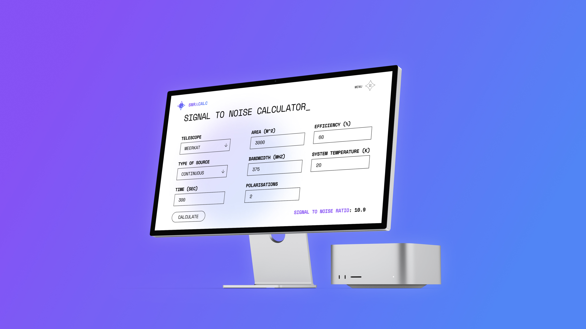

Prof. Matthew Bailes



The SNRCalc Tool stands for “Signal-to-noise Ratio Calculator”, a tool that can be used by astronomers to get an estimate for the expected signal-to-noise ratio with any observation of a single source.
The objective of this project is to develop a tool capable of computing an estimated signal-to-noise ratio for any telescope of any single source using the radiometer equation. This needed to be packaged in a solution anyone can quickly access, but is also clean, modern and reflects the branding of ASTRAL as well.
Thank you to Dr. Chris Flynn for supervising this project. This project is funded by ASTRAL.